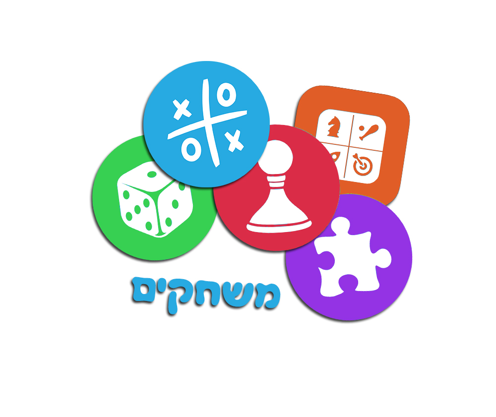

<div> 
    <snap-drawer>
        <div class=snap-menu>
            <div class="sidebar-header text-center">
                
            </div> 
            <ul class=snap-ul> 
                <li ng-class="{active: $state.includes('overview')}">
                    <a ui-sref=overview>דף הבית</a>
                </li>
                
                <li ng-class="{active: $state.includes('learningMode')}">
                    <a ui-sref=learningMode>לימוד שפת הסימנים</a>
                </li>
                
                <li ng-class="{active: $state.includes('game')}">
                     <a ui-sref=game>משחק</a>
                </li>
                
                <li ng-class="{active: $state.includes('login')}">
                    <a ui-sref=login>התנתק</a>
                </li>
                
                <li ng-class="{active: $state.includes('contactUs')}">
                    <a ui-sref=contactUs>צור קשר</a>
                </li>
            </ul>
        </div>
    </snap-drawer> 
    <snap-dragger>
    </snap-dragger>
    <snap-content snap-opt-tap-to-close=false>
      <div >
        <a snap-toggle=left ng-click="menuOpen = !menuOpen"> 
            <span class=menutoggle> 
                <i ng-hide=menuOpen class="fa fa-bars fa-2x"></i>
                <i ng-show=menuOpen class="fa fa-times fa-2x"></i> 
            </span>
        </a>
        <div class=fr> <h2>דף הבית</h2> </div>
            <div class=container>

                <div class="title">Just Sign</div>

                <div class="container">
                    <div class="row" id = "menu_overview">
                        <div class="col-lg-6 col-md-6 col-sm-6" >
                            
                


                        </div>
                
                        <div class="col-lg-6 col-md-6 col-sm-6 col-xs-6">
                    

                        </div>
                    </div>
                      
                </div>
      </div>

    </snap-content> 
</div>
            <div id="the_footer">© 2016 Shai Project</div>

</div>    